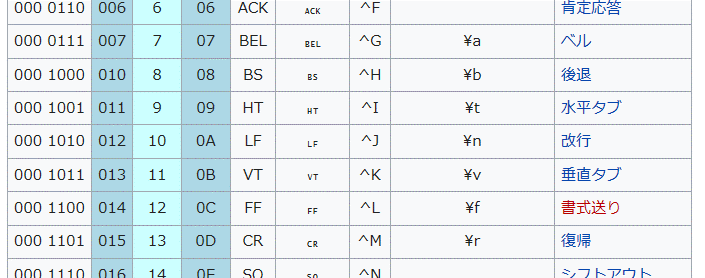
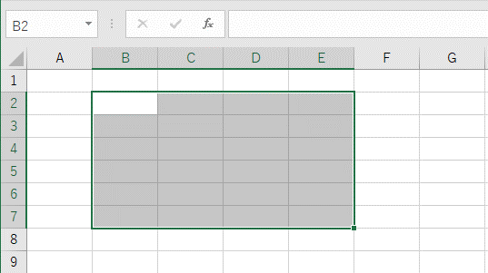
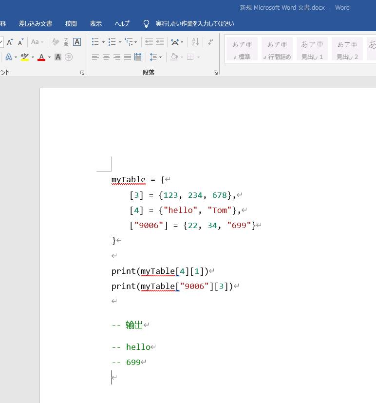
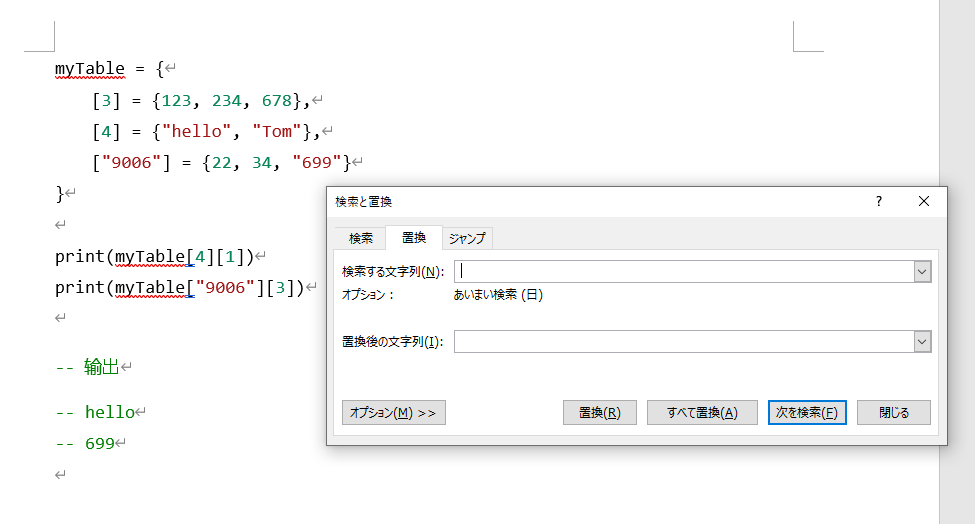
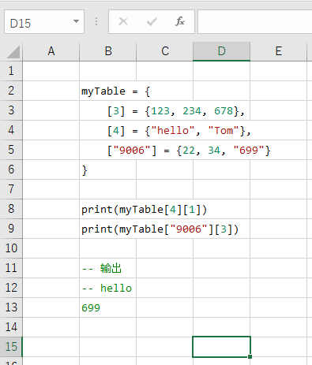

16.1 VBA基础
更新日期: 2020/5/17
1. 查询官方手册
VBA的语法比较古怪，而代码编辑器比较老旧，使用体验并不好，给我们的学习使用带来很大的障碍。 在开始之前，先介绍一个方便的查询文档方法。
选择代码中的类型或者属性，按下F1，可以立即跳转到微软官方手册上的相关页面。
比如，我想知道可以对单元格进行哪些操作。可以直接选中Range这几个字母，按下F1。
2. 语法参考
VBA中有很多特殊的语法，与主流的编程语言不太一样。为了减少记忆量，尽量使用最简单的语法来编程会使自己轻松一些。
2.1 变量，常量
在VBA中使用Dim关键字来定义变量，并可以作为局部变量或者全局变量。
1 | |
要注意，在定义常量的时候并不需要指定类型:
1 | |
在VBA中如果要给对象类型的变量赋值，需要加上Set关键字。
1 2 | |
2.2 数组
数组的使用比较复杂，直接用例子来说明。要注意的是数组的下标从 1 开始：
1 2 3 4 5 6 7 8 9 10 11 12 13 14 15 16 17 18 | |
2.3 函数，过程
函数和过程并没有太大区别，函数可以带返回值。过程也可以通过传递ref参数来输出结果。
函数的返回值用它的名字来指代。
1 2 3 4 5 6 7 8 9 10 11 12 13 14 15 16 17 | |
使用输出类型的参数:
1 2 3 4 5 | |
这里为了返回多个值使用了数组来作为输出参数。
调用过程与函数。
1 2 | |
2.4 控制语句
IF语句
1 2 3 4 5 6 7 | |
SWITCH语句
switch的写法比较多，有的也很方便，但是语句格式不同于一般的编程语言。可以尽量少用。
这里我们只看最基本的用法，也就是和其它语言中相同的用法。
1 2 3 4 5 6 7 8 | |
注意，这里并没有break。
WHILE语句
1 2 3 4 5 6 7 | |
要退出循环，可以使用Exit Do。
FOR语句
1 2 3 4 | |
要退出循环，可以使用Exit For。
2.5 逻辑运算符
相等比较
注意只使用一个=，而不是==。
逻辑与和或
使用And和Or关键字。
逻辑取反
使用Not。
判断空对象
1 2 3 4 5 6 7 8 9 10 11 | |
3. 字符串操作
3.1 字符串拼接
使用 & 来进行字符串拼接。注意多种语言的拼接字符不要混淆了。
1 | |
3.2 特殊字符
有很多特殊字符无法在代码里面直接打出来，VBA并没有提供转义字符来表示，而是通过直接指定ASCII码的方式：
此处引用WiKi百科上的ASCII码表：

比如要在字符串种使用水平制表符(\t)，可以这样写:
1 2 | |
3.3 字符串比较
直接使用一个 = 来比较，不需要equals之类的专门的方法。
3.4 查找
3.4.1 查找指定范围内的文本
使用Range对象的Find方法可以进行字符串的查找，可以配置的参数也比较多。
查找一个范围内的文本的通常用法如下：
1 2 3 4 5 | |
具体的参数可以查询微软的文档。主要可以配置如下参数：
| 参数 | 含义 |
|---|---|
| After | 开始检索的位置，默认从范围左上角开始的第二个单元格开始 |
| LookIn | 在单元格的什么属性中查找，默认从单元格的值里面查找 |
| LookAt | 部分匹配或者是全部匹配，默认为部分匹配 |
| SearchOrder | 查找顺序，行优先或者列优先。默认为行优先 |
| SearchDirection | 查找方向，默认从前往后查找 |
| MatchCase | 是否区分大小写，默认不区分 |
| MatchByte | 双字节匹配，通常用不到 |
| SearchFormat | 搜索格式，字体颜色等，通常用不到 |
这里之所以用奇怪的方法指定了After参数，是因为Find有一个非常坑的特性。
你以为Find函数会从指定的范围内的第一个单元格开始查找，然而其实是从第二个单元格开始找。
所以如果查找范围内有多个单元格都是匹配的，可能会得到奇怪的结果。
上面After配置的值，就是配置为该范围内的最后一个单元格。由于是循环查找的，那么最后一个单元格的下一个单元格就是范围内的第一个单元格。
3.4.2 继续查找下一个
就像我们在窗口中查找一样，代码里也可以循环查找下一个。使用如下函数：
1 | |
详细的用法可以在微软的文档中找到。
用法示例：
1 2 3 4 5 6 7 8 | |
3.4.3 查找空白单元格
使用""即可表示空白单元格：
1 2 | |
3.5 常用字符串参照函数
| 函数 | 意义 |
|---|---|
| Len(字符串) | 取字符串长度 |
| Left(字符串) | 从左边截取子字符串 |
| Mid(字符串) | 从中间截取子字符串 |
| Right(字符串) | 从右边截取子字符串 |
4. EXCEL表格中的对象
4.1 Book对象
类型 Workbook
当前处于激活状态的Book为ActiveWorkbook。
这个类型我们使用的不多，通常的VBA代码都是针对某一个特定的Excel文件来运行的。
我们操作Sheet的时候一般默认操作当前处于激活状态的Book。
4.2 Sheet对象
类型 WorkSheet
取得当前激活状态的sheet
1 | |
取得指定的sheet
1 2 3 4 | |
Sheet与Worksheet的概念我们一般是不用关心的。
激活一个sheet
1 | |
激活后，会切换输入焦点到那个sheet页，并且使用ActiveSheet可以取得这个sheet。
4.3 Cell对象
类型 Range
所谓Cell，也就是单元格。使用Range类型来表示单元格，也就是说可以指定一个矩形框范围内的单元格。
Range的写法也比较多，掌握最简单实用的写法可以节约脑细胞。
| 写法 | 含义 |
|---|---|
| Cells(2, 4) | 第二行第四列的单个单元格 |
| Range(A1:K20) | 从A1到K20的多个单元格 |
| Rows(2) | 第二行所有单元格 |
| Columns(3) | 第三列所有单元格 |
| Range(Rows(2), Rows(4)) | 第二行到第四行的所有单元格 |
| Range(Columns(3), Columns(9)) | 第三列到第九列的所有单元格 |
| Range(Cells(2, 4), Cells(5, 10)) | 从第二行第四列到第五行第十列的所有单元格 |
4.4 当前选择中的区域

像这种矩形选择区域。 使用录制宏自动生成的代码里面很常见。
使用如下代码可以将指定的Cell对象选中：
1 | |
Selection就表示当前选择中的区域，通常情况下这也是一个Range类型的对象。
5. 特殊处理
5.1 nonbreaking space导致的错误
从其它地方往sheet页上带着样式拷贝文本的时候，经常会有奇怪的东西被拷贝进来。就比如这种特殊的空格。
例如: 从Visual Studio Code带着样式往Excel种贴代码。
这种空格叫做【UTF8半角空格】，通常使用的时候和一般的空格区别不大。经常在html中用来表示固定宽度的空白，因为一般的半角空格会被自动压缩宽度，而这种空格能保持固定宽度。
绝大多数情况下，我们不需要关心它。几乎所有的编程语言都把它当作一个普通的空格。但是像lua这种语言，到现在也不支持unicode编码的字符，就是出语法错误。
在程序中使用Chrw(160)来表示这个特殊空格，写相关代码的时候可以考虑使用。
但通常，我使用如下方法来解决这个问题。
(1) 将代码从Visual Studio Code拷贝到Word文档中。

(2) 使用替换功能将这种空格替换为普通半角空格。
在查找框里面输入这个特殊空格的方式是：
- a. 按住键盘上的Alt键
- b. 输入数字160 ※160是这个特殊空格的AscII码
- c. 松开Alt键

(3) 全选Word文档中的内容，然后粘贴到Excel中。

之所以不在Excel中替换这个字符，是因为替换后文字的样式就乱了，而在Word中替换则不会影响文字的样式。